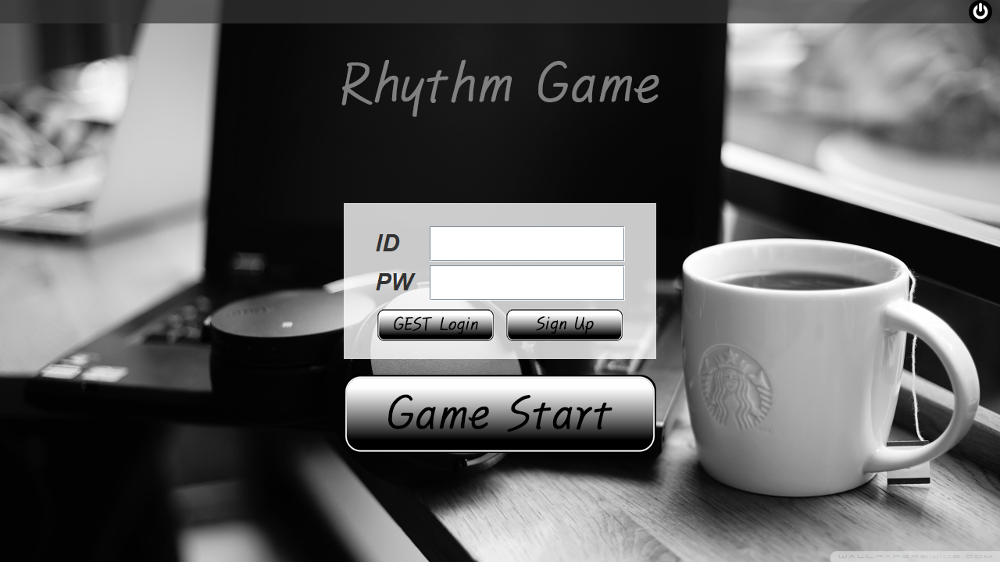
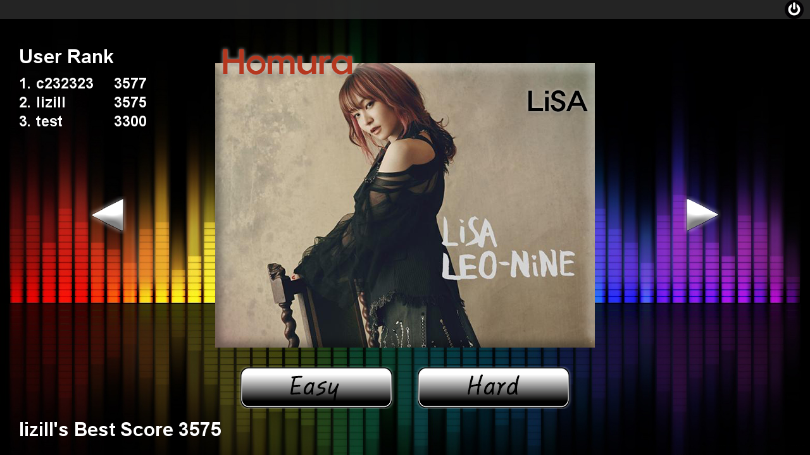
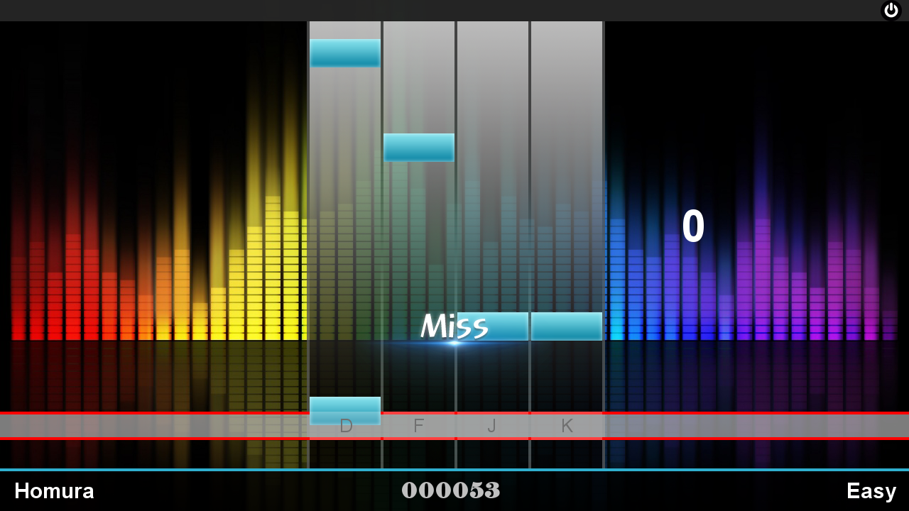
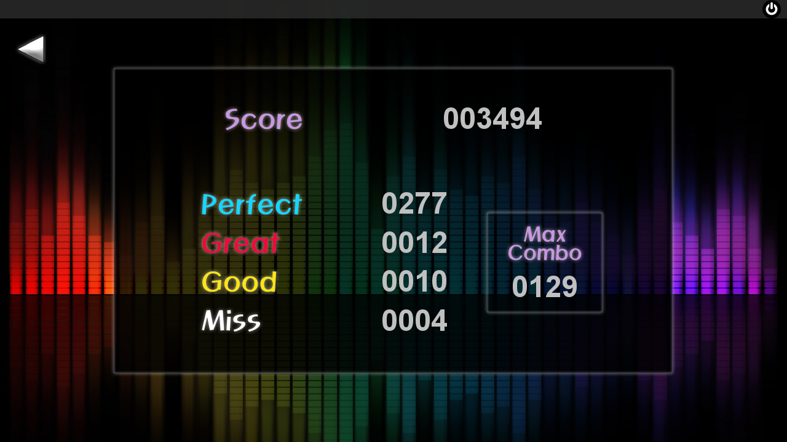

メインメニュー

- 最初のログイン画面です。
- データベースと繋いで会員登録し、ログインできます。手続きに従って会員登録を行ってください。
- 「GEST Login」を通じてサーバーに接続できない場合もゲームがプレイできます。
曲選択画面

- 左、右ボタンで曲を選んで、Easy、Hardボタンでそれぞれのゲームをプレイできます。
- ログインした場合、3位までの「User Rank」を確認できます。「ID」と「Best Score」が表紙されます。
- 「GEST Login」の場合、ゲーム中に「Best Score」は表紙されますが、ランキングには登録できません。
プレイ画面

- 「Easy」または「Hard」ボタンを押すとゲームが始まります。
- 「Easy」では４つのキーパッドを使い、「Hard」ではそれに「Space Bar」を加えて５つのキーパッドを使います。
- 判定によって「Perfect, Great, Good, Miss」それぞれの点数が得られます。「Miss」の場合、「Combo」が０に戻ります。
- 下段で曲のタイトルや現在スコアなどを確認できます。
結果画面

- プレイが終わると結果画面に続きます。
- 「戻る」ボタンで曲選択画面に戻ることができます。